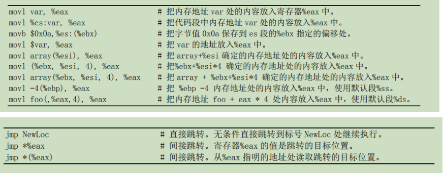
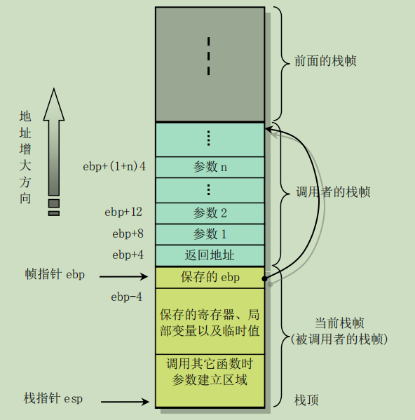

汇编语法
1. as86
汇编器编译产生的目标文件 objfile 通常起码包含三个段或区3（section），即正文段（.text）、数据段（.data）和未初始化数据段（.bss）
as86 汇编语言程序中，凡是以感叹号'!'或分号';'开始的语句其后面均为注释文字。注释语句可以放在任何语句的后面，也可以从一个新行开始。
汇编指示符(汇编伪指令 or 伪操作符):以字符‘.’开始，并且不会在编译时产生任何代码。汇编指示符由一个伪操作码，后跟 0 个或多个操作数组成。
以下面为例，globl即是伪操作码，后面的标号begtext即是操作数。（标号即后面带‘:’的标识符）。
- eg.
.globl begtext, begdata, begbss, endtext, enddata, endbss
.text
begtext:
.data
begdata:
.bss
begbss:
.text
- ‘globl'’伪操作符用于定义随后的标号标识符是外部的或全局的，并且即使不使用也强制引入; ‘.text’用于标识正文段的开始位置，并把当前段切换到text段; '.data'用于标识数据段的开始位置，并把当前段切换到 data段；而'.bbs'则用于标识一个未初始化数据段的开始，并把当前段改变成 bbs 段。
立即数前一定要加'#'，否则将作为内存地址使用而使语句变成绝对寻址语句：
mov ax, #123; ！这里存入ax的是十进制123，若存入十六进制，则为0x123。
把一个标号（例如 msg1）的地址值放入寄存器中时也一定要在前面加'#'，否则会变成把 msg1 地址处的内容放到了寄存器中。
mov ax, #msg1
定义字符串需要伪操作符‘.ascii’,并且需要使用双引号括住字符串；而伪操作符’.asciiz’还会在字符串后添加一个NULL(0)字符； 定义字符需要伪操作符’.byte’，使用单引号把字符括住；
.ascii “hello world”
.byte 12 ! 直接使用ascii码
.byte ‘D’
'.org' 定义了当前汇编的位置。这条语句会把汇编器编译过程中当前段的位置计数器值调整为该伪操作符语句上给出值。
伪操作符 '.word' 用于在当前位置定义一个双字节内存对象（变量），其后可以是一个数或者是一个表达式。
2. build and link for as86
as86 -0 -a -o boot.o boot.s
ld86 -0 -s -o boot boot.o
其中选项'-0'用于生成 8086 的 16位目标程序；'-a'用于指定生成与 GNU as 和 ld 部分兼容的代码。'-s'选项用于告诉链接器要去除最后生成的可执行文件中的符号信息。'-o' 指定生成的可执行文件名称。
as86 汇编器仅用于编译内核中的 boot/bootsect.s以及引导扇区程序和实模式下的设置程序boot/setup.s。
内核中其余所有汇编语言程序（包括 C 语言产生的汇编程序）均使用 gas （简称as）来编译，并与 C语言程序编译产生的模块链接.
3. AT&T——as语法
3.1
汇编器使用 AT&T 系统 V 的汇编语法（下面简称为 AT&T 语法）。这种语法与 Intel 汇编程序使用的语法（简称 Intel 语法）很不一样，它们之间的主要区别有以下几点：
- AT&T 语法中立即操作数前面要加一个字符 '$'；寄存器操作数名前要加字符百分号 '%'; 绝对跳转/调用（相对于与程序计数器有关的跳转/调用）操作数前面要加星号'*'。而 Intel 汇编语法均没有这些限制。
- AT&T 语法与 Intel 语法使用的源和目的操作数次序正好相反。AT&T 的源和目的操作数是从左到右 '源, 目的'。例如 Intel 的语句 'add eax, 4' 对应 AT&T 的 'addl $4, %eax'。
- AT&T 语法中内存操作数的长度（宽度）由操作码最后一个字符来确定。操作码后缀'b'、'w'和'l'分别指示内存引用宽度为 8 位字节（byte）、16 位字（word）和 32 位长字（long）。sIntel 语法则通过在内存操作数前使用前缀'byte prt'、'word ptr'和'dword ptr'来达到同样目的。因此，Intel 的语句'mov al, byte ptr foo'对应于 AT&T 的语句'movb $foo, %al'。
- AT&T 语法中立即形式的远跳转和远调用为'ljmp/lcall $section, $offset'，而 Intel 的是 'jmp/call far section:offset'。同样，AT&T 语法中远返回指令'lret $stack-adjust'对应 Intel的'ret far stack-adjust'。
- 符号:(Label)是后面紧随一个冒号的符号。此时该符号代表活动位置计数器的当前值；符号名以一个字母或'._'字符之一开始。局部符号用于协助编译器和程序员临时使用名称。在一个程序中共有 10 个局部符号名（'0'...'9'）可供重复使用。为了定义一个局部符号，只要写出形如'N:'的标号（其中 N 代表任何数字）。若是引用前面最近定义的这个符号，需要写成'Nb'；若需引用下一个定义的局部标号，则需要写成'Nf'。jmp 1b 跳转到之前的标号1处；jmp 1f 跳转到之后的标号1处 特殊符号'.'表示 as 汇编的当前地址。
- 每个区都有一个位置计数器（Location Counter），它会对每个汇编进该区的字节进行计数。
- 内存引用
section:disp(base, index, scale)

3.2
所有汇编命令的名称都以'.'开始，其余是字符，并且大小写无关。但是通常都使用小写字符。
- .align abs-expr1, abs-expr2, abs-expr3
.align的作用在于对指令或者数据的存放地址进行对齐，有些CPU架构要求固定的指令长度并且存放地址相对于2的幂指数圆整，否则程序无法正常运行，比如ARM；有些系统却不需要，如果不遵循地址的圆整规则，程序依然可以正确执行，只是降低了一些执行效率，比如i386。.align的作用范围只限于紧跟它的那条指令或者数据，而接下来的指令或者数据的地址由上一条指令的地址和其长度决定。 abs-expr1在不同格式的目标文件上含义不同，在a.out（assembler and link editor output ）该表达式值是位置计数器值增加后其二进制值最右面 0 值位的个数，即是 2 的 次方值。例如，'.align 3'表示把位置计数器值增加到 8 的倍数上。如果位置计数器值本身就是 8 的倍数，那么就无需改变。但是对于使用 ELF（Executable and Linking Format ）格式的 80X86 系统，该表达式值直接就是要求对其的字节数。例如'.align 8'就是把位置计数器值增加到 8 的倍数上。 abs-expr2 给出用于对齐而填充的字节值 abs-expr3 用于指示对齐操作允许填充跳过的最大字节数。如果对齐操作要求跳过的字节数大于这个最大值，那么该对齐操作就被取消。
- .global symbol(或者.globl symbol)
该汇编命令会使得链接器 ld 能看见符号 symbol。如果在我们的目标文件中定义了符号 symbol，那么它的值将能被链接过程中的其他目标文件使用。若目标文件中没有定义该符号，那么它的属性将从链接过程中其他目标文件的同名符号中获得。 - .string "string"
定义一个或多个用逗号分开的字符串。在字符串中可以使用转义字符。每个字符串都自动附加一个NULL 字符结尾。 - .ascii "string"...
从位置计数器所值当前位置为字符串分配空间并存储字符串。可使用逗号分开写出多个字符串。例如，'.ascii "Hellow world!", "My assembler"'。该汇编命令会让 as 把这些字符串汇编在连续的地址位置处，每个字符串后面不会自动添加 0（NULL）字节。 - .asciz "string"...
该汇编命令与'.ascii'类似，但是每个字符串后面会自动添加 NULL 字符。 - .byte expressions
该汇编命令定义 0 个或多个用逗号分开的字节值。每个表达式的值是一个字节。 - .quad bignums
指定 0 个或多个用逗号分开的 8 字节大数 bignum。如果大数放不进 8 个字节中，则取低8个字节。
3.3
虽然 as 通常用来编写纯 32 位的 80X86 代码，但是 1995 年后它对编写运行于实模式或 16 位保护模式的代码也提供有限的支持。为了让 as 汇编时产生 16 位代码，需要在运行于 16 位模式的指令语句之前添加汇编命令'.code16'，并且使用汇编命令'.code32'让 as 汇编器切换回 32 位代码汇编方式。as 不区分 16 位和 32 位汇编语句，在 16 位和 32 位模式下每条指令的功能完全一样而与模式无关。as总是为汇编语句产生 32 位的指令代码而不管指令将运行在 16 位还是 32 位模式下。如果使用汇编命令'.code16'让 as 处于 16 位模式下，那么 as 会自动为所有指令加上一个必要的操作数宽度前缀而让指令运行在 16 位模式.
由于在 1991 年开发 Linux 内核 0.12 时 as 汇编器还不支持 16 位代码，因此在编写和汇编 0.12 内核实模式下的引导启动代码和初始化汇编程序时使用了前面介绍的 as86 汇编器.
4 嵌入式汇编
基本格式:
__asm__ __volatile__(“汇编语句”
: 输出寄存器
: 输入寄存器
: 会被修改的寄存器);
除第 1 行以外，后面带冒号的行若不使用就都可以省略。其中，“__asm__”是内联汇编语句关键词; __volatile__"表示编译器不要优化代码;“汇编语句”是你写汇编指令的地方; “会被修改的寄存器”表示你已对其中列出的寄存器中的值进行了改动，gcc 编译器不能再依赖于它原先对这些寄存器加载的值。如果必要的话，gcc 需要重新加载这些寄存器。
__asm__ __violate__ ("movl %1,%0" : "=r" (result) : "m" (input));
"movl %1,%0"是指令模板；"%0"和"%1"代表指令的操作数，称为占位符，内嵌汇编靠它们将C 语言表达式与指令操作数相对应。指令模板后面用小括号括起来的是C语言表达式，本例中只有两个："result"和"input"，他们按照出现的顺序分 别与指令操作数"%0"，"%1"对应；注意对应顺序：第一个C 表达式对应"%0"；第二个表达式对应"%1"，依次类推，操作数至多有10 个，分别用"%0","%1"...."%9"表示。
"result"前面的限制字符串是"=r"，其中"="表示"result"是输出操作数，"r" 表示需要将"result"与某个通用寄存器相关联，先将操作数的值读入寄存器，然后在指令中使用相应寄存器，而不是"result"本身。
"input"前的"m"表示操作数放在内存，而不是寄存器中。
"r"和"m"都是限制符;C表达式或者变量与寄存器的关系由GCC自动处理，我们只需使用限制字符串指导GCC如何处理即可。
分类 限定符 描述
通用寄存器 "a" 将输入变量放入eax
这里有一个问题：假设eax已经被使用，那怎么办？
其实很简单：因为GCC 知道eax 已经被使用，它在这段汇编代码
的起始处插入一条语句pushl %eax，将eax 内容保存到堆栈，然
后在这段代码结束处再增加一条语句popl %eax，恢复eax的内容.
"b" 将输入变量放入ebx
"c" 将输入变量放入ecx
"d" 将输入变量放入edx
"s" 将输入变量放入esi
"d" 将输入变量放入edi
"q" 将输入变量放入eax，ebx，ecx，edx中的一个
"r" 将输入变量放入通用寄存器，也就是eax，ebx，ecx，
edx，esi，edi中的一个
"A" 把eax和edx合成一个64 位的寄存器(use long longs)
内存
"m" 内存变量
"o" 操作数为内存变量，但是其寻址方式是偏移量类型，
也即是基址寻址，或者是基址加变址寻址
"V" 操作数为内存变量，但寻址方式不是偏移量类型
" " 操作数为内存变量，但寻址方式为自动增量
"p" 操作数是一个合法的内存地址（指针）
寄存器或内存
"g" 将输入变量放入eax，ebx，ecx，edx中的一个或者作为内存变量
"X" 操作数可以是任何类型
立即数
"I" 0-31之间的立即数（用于32位移位指令）
"J" 0-63之间的立即数（用于64位移位指令）
"N" 0-255之间的立即数（用于out指令）
"i" 立即数
"n" 立即数，有些系统不支持除字以外的立即数，这些系统应该使用"n"而不是"i"
匹配 "0"， 表示用它限制的操作数与某个指定的操作数匹配，
"1" ... "9" 也即该操作数就是指定的那个操作数，例如"0"
去描述"％1"操作数，那么"%1"引用的其实就
是"%0"操作数，注意作为限定符字母的0－9 与
指令中的"％0"－"％9"的区别，前者描述操作数，
后者代表操作数。
: "=D" (addr), "=c" (cnt)
: "d" (port), "0" (addr), "1" (cnt)
这里的0 表示输入部分的addr与输出部分的addr是同一个变量，
即它们使用相同寄存器，这样做是为了使用该寄存器原有的值。
: "=a" (__res)
: "0" (__NR_read), "b" ((long)(fd)), "c" ((long)(buf)), "d" ((long)(n)));
这里__res是%0操作数, __NR_read是%1操作数, 用"0"描述%1操作数, 则%1引用的即是%0,
即eax寄存器。
& 该输出操作数不能使用过和输入操作数相同的寄存器
操作数类型 "=" 操作数在指令中是只写的（输出操作数）
"+" 操作数在指令中是读写类型的（输入输出操作数）
浮点数 "f" 浮点寄存器
"t" 第一个浮点寄存器
"u" 第二个浮点寄存器
"G" 标准的80387浮点常数
% 该操作数可以和下一个操作数交换位置
例如addl的两个操作数可以交换顺序
（当然两个操作数都不能是立即数）
# 部分注释，从该字符到其后的逗号之间所有字母被忽略
* 表示如果选用寄存器，则其后的字母被忽略
C函数调用机制：要在进入函数时为函数的局部变量分配存储空间，并且在退出函数时收回这部分空间，数据的传递和局部变量存储空间的分配与回收则通过栈操作来实现。
单个函数调用操作所使用的栈部分被称为栈帧（Stack frame）结构，栈帧结构的两端由两个指针来指定。寄存器 ebp 通常用作帧指针（frame pointer），而 esp 则用作栈指针（stack pointer）。在函数执行过程中，栈指针 esp 会随着数据的入栈和出栈而移动，因此函数中对大部分数据的访问都基于帧指针 ebp 进行。
